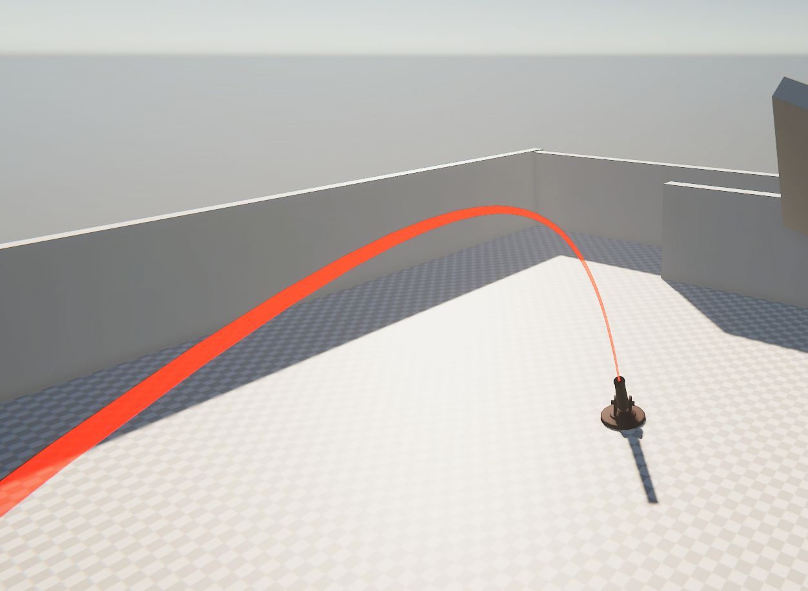
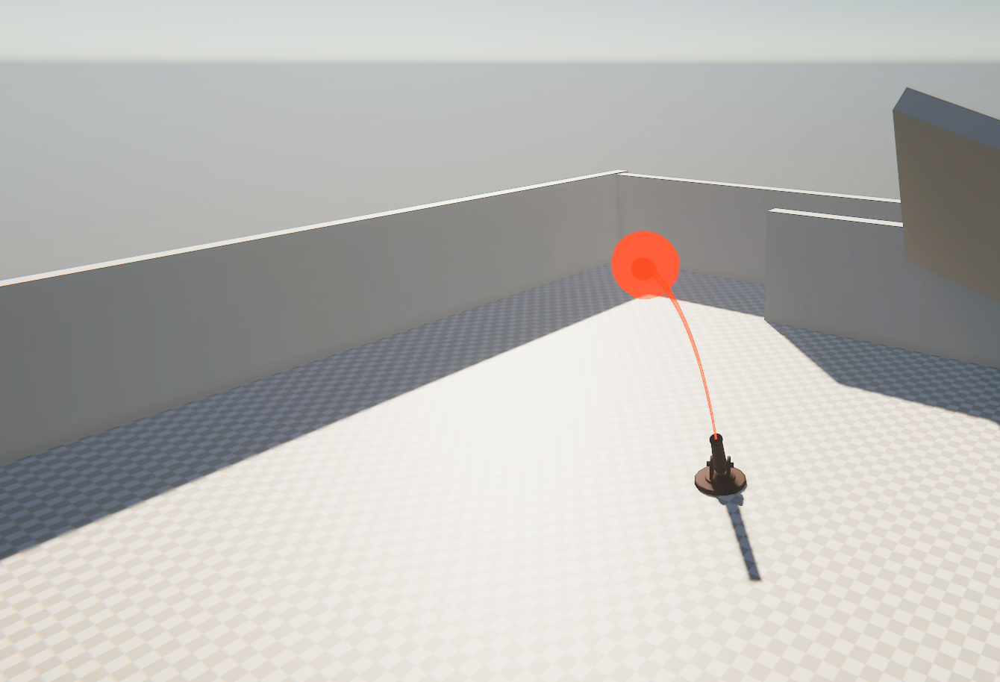
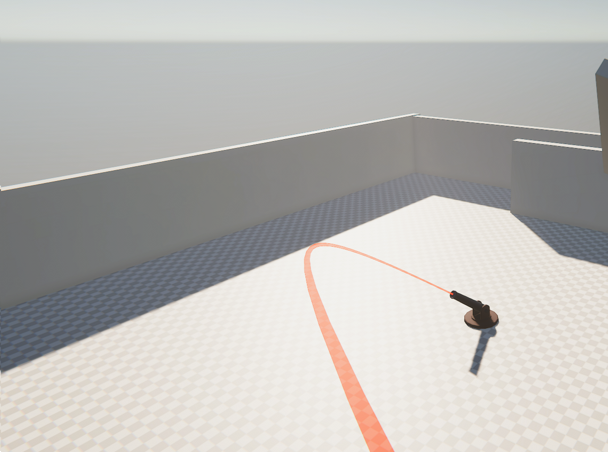

A small project to trace the trajectory of a projectile before it is fired.
This is a project to draw a trajectory line from a launch point to a collision point using physics and raycasts. It makes use of the physics equation to calculate the position of a projectile:
xo + vot + 1⁄2 at2
The basic premise is to ray cast along the expected trajectory using the equation above.

To get how long to raycast, we first decide a maximum amount of simulation time to check. Simulation time is the amount of time the projectile would move if fired. Then we decide on a trace resolution. This is the maximum number of ray traces we will do if no collision occurs. The higher the value, the more accurate the check, but the higher the performance cost. We divide the maximum simulation time by the trace resolution to get the amount of simulation time per ray cast.
From here, we know our starting point of our projectile. This will work as the starting point of the first raycast. Then we can use our physics equation above to calculate the position of the projectile at the end of our first time step. If a hit occurs, we are done and can spawn something at that point to let the player know. Otherwise we repeat the process.
while(!hitHappened && index < traceResolution + 1)
{
time = Mathf.Min(time + raycastStep, maxTime);
nextPosition = GetPositionAtTime(transform.position, startVelocity, time, Physics.gravity); // This is where our physics equation is called!
// Raycast from the last position to the next position
if(Physics.Linecast(lastPosition, nextPosition, out hit))
{
// We hit something
hitHappened = true;
lastPosition = hit.point;
// Optional: We can set our hit display object to rotate based on the normal of whatever we hit
spawnedHitMarker.transform.rotation = Quaternion.LookRotation(hit.normal);
}
else
{
// We did not hit, get ready for next loop
lastPosition = nextPosition;
}
}
// Assign the number of points on our trajectory to draw
line.positionCount = index;
// Move our marker object to the proper position
// If we don't want to show the hit marker if we didn't hit (or show a different marker), we can always just check for hitHappened
spawnedHitMarker.transform.position = line.GetPosition(index - 1);
